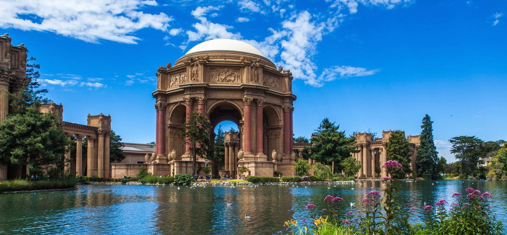

bw_0180 · blender_3d
模型实际输入详情 · 两个模型的 inputs 文件逐字节一致，已核验。
原始题目全文
以下逐字展示 query.txt，保留原文语言；这是任务要求，并非生成结果或评分标准。
我是设计师，要拿艺术宫外部空间装修方案给业主过，现有场地布局不能改。请参照配图的布局和风格做相关新设计，不要复刻。中央穹顶柱廊、两侧连廊、前景水池和滨水绿化要做全，忽略图中人物，其余建筑层次与环境细节按现实补齐。重点是主要立面完整入画，主体清楚、别被杂物盖住；材质要方便业主辨认，晴天光影、水面和近景细节要有临场感，细节你可以自己把握。做10秒穿梭漫游，交付参数见 `layout.md`；渲染成片并保留 Blender 工程。下载 query.txt
原始参考素材

任务附件
attachments/layout.md
# 艺术宫外部空间｜客户沟通与交付说明 ## 项目边界 | 项目 | 要求 | |---|---| | 使用场景 | 设计师向业主沟通艺术宫外部空间装修方案，材质和空间关系需要直观可辨 | | 场地限制 | 现有场地布局保持不变 | | 参考方式 | 配图只作为布局、构图、风格及氛围参照，制作相关的新设计，不做逐像素复刻 | | 补充资料 | 可以查找同一真实场景的其他公开参考，用于校对建筑结构、尺度和材质表现 | | 人物处理 | 忽略配图中的人物，不作为建模对象 | ## 场景完整度与表现 - 主体建筑的多层结构、装饰细节、周边环境及常规陈设都要完整制作，尺度与材质响应符合现实。 - 先保证整体布局开阔、宏大，再打磨会进入近景的建筑、水面和环境细节。 - 建筑表面、水体与绿化之间需要清楚区分，方便业主看方案时判断用材和空间层次。 - 天气与配图一致：晴朗蓝天、零散白云和清晰自然日光；阴影、水面反射及高光应真实可信。 ## 漫游镜头 - 时长：10秒。 - 开场采用开阔的整体视野，让主要立面完整入画并保持主体无遮挡。 - 随后向近景细节推进，形成连续的场景穿梭体验；镜头节奏和具体路径可自行把握。 ## 交付规格 | 项目 | 参数 | |---|---| | 成片格式 | MP4 | | 分辨率 | 1080p | | 帧率 | 24fps | | 输出内容 | 最终动画渲染成片 | | 工程文件 | 保留可继续调整的 `.blend` 工程 | # English handoff I’m the designer presenting an exterior refurbishment concept for an art palace to the client. The existing site plan is locked. Use the supplied image as a reference for layout, composition, style and atmosphere, but develop a related new design rather than a literal copy. Additional public references of the real location may be used to verify structure, scale and material response. Ignore all people in the image. The complete architectural hierarchy, decorative detail, surrounding environment and normal site dressing should be present and physically believable. Establish the broad, monumental layout first, then refine anything that comes close to camera. Materials must read distinctly for the client, with convincing daylight, shadows, water reflections and highlights matching the clear blue sky and scattered-cloud conditions in the reference. The priority is to keep the main facade fully visible in the establishing view and make sure the subject is never obscured by incidental clutter. The fly-through should then move toward closer details; use your judgment on the exact path and pacing. Delivery is a 10-second rendered MP4 at 1080p and 24fps, together with the editable `.blend` project.
本次运行附加的执行指令
这是自建 harness 传给两模型的共同执行指令，不属于原始题目。CPU 设置与个别原题 GPU 要求之间的差异，详见主页说明。
Complete the Blender creation task in /workspace/inputs/query.txt using all declared references and attachments in /workspace/inputs/input.json. Read the reference images with Read; for video, extract and inspect frames with ffmpeg and Read. Blender 4.2.10 is available as `blender` or /runtime/blender/blender. Python with Pillow/NumPy is available as `python`. You can write and run bpy scripts with background Blender. This machine uses CPU Cycles; use 8 threads, and inspect your renders before finishing. You have an 8-hour time budget. Fulfil the original requested deliverables, including animations and resolutions where specified. Save the editable primary project to /workspace/exports/final.blend, with requested images/videos and all texture dependencies inside /workspace/exports using relative paths or packed assets. Put temporary scripts and previews under /workspace/work. Do not finish while required rendering jobs are still running. Use only the provided task inputs, your tools, and your own creation work; evaluation is separate.
完整输入文件
| 文件（点击下载） | 大小 |
|---|---|
| attachments/layout.md | 2,781 B |
| input.json | 193 B |
| instruction.html | 1,789,136 B |
| query.txt | 596 B |
| reference_images.base64.json | 1,783,235 B |
| references/image_01.png | 1,337,112 B |

查看 input.json 文件清单
{
"task_id": "bw_0180",
"query_file": "query.txt",
"files": [
"attachments/layout.md",
"references/image_01.png",
"instruction.html",
"reference_images.base64.json"
]
}
instruction.html 和 reference_images.base64.json 为输入目录内的原始文件，已保留供下载。本页不包含评测 rubric 或模型产物。